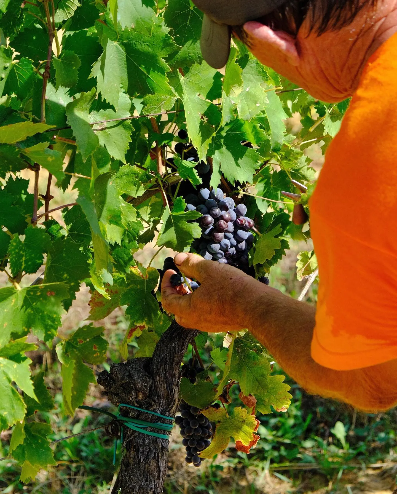

Tappa 1 Vino
La vigna
Collina, terreni ricchi di minerali e uve che qui non ti aspetti. Accanto a Sangiovese e Trebbiano crescono Syrah, Roussanne e Sauvignon, arrivati a Montecarlo dalla Francia intorno al 1870. Per questo i vini di qui sono diversi dal resto della Toscana.